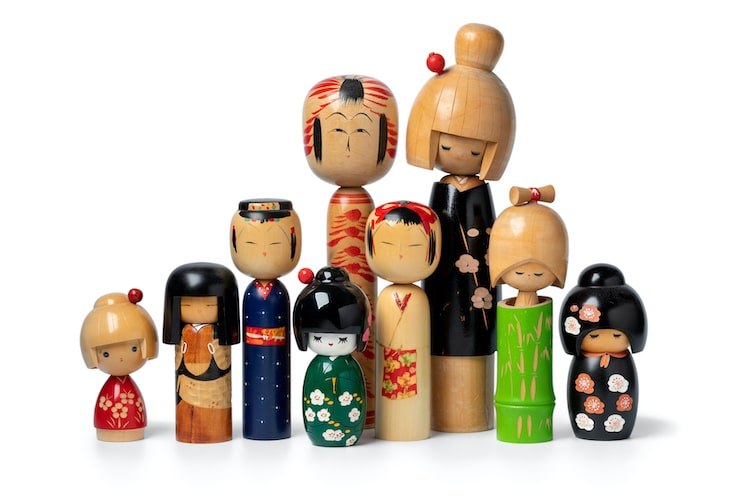

Over the years they have become increasingly popular worldwide, especially amongst shinnichi (Japanophiles)
and collectors.
Kokeshi doll making has now come to be recognised as one of Japan's most vibrant folk arts.
Traditionally comprising a simple trunk and enlarged head with a few thin, painted lines for detail,
kokeshi designs have become increasingly intricate, diverse and faithful to the human form over the years,
resulting in the attractive and relatively lifelike dolls you see today. Contemporary interpretations of
kokeshi are of a more rounded shape than their traditional counterparts, with richer colours and a greater
emphasis on the facial features. They are often themed to celebrate a special occasion, reflect a hobby or
profession, or emulate a fictional character, making them work particularly well as gifts.
They were created to satisfy the desire of children to have something with which they could play as
well as incorporating historical elements that parents wanted to pass on to their children.
For a doll reduced to its simplest form, there are a wonderful range of variations on the
spherical/cylindrical theme produced by the artists, with very distinctive facial features, head and body
shapes, and painted patterns. These variations reflect the styles of the six different prefectures and the
ten/eleven families historically associated with the making of these traditional Kokeshi wooden dolls.
These variations reflect the styles of the six different prefectures and the ten/eleven families
historically associated with the making of these traditional Kokeshi wooden dolls.
